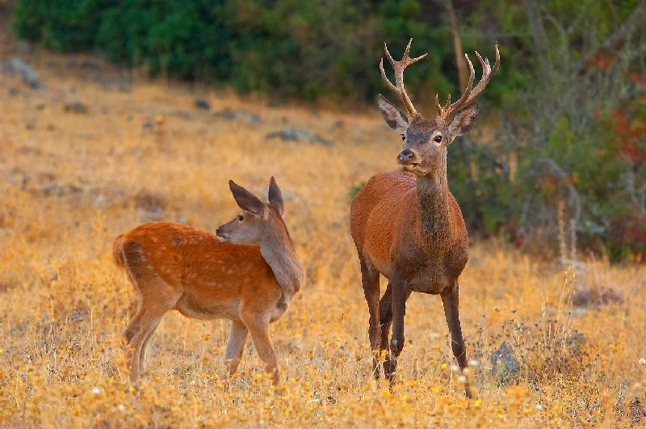

En Cadis hi ha més de 220.000 hectàrees de paratges, reserves i parcs naturals que fan d’aquesta província una de les quals compten amb més proporció d’espais protegits d’Espanya.
En Cadis predomina el clima mediterrani, això fa que les plantes siguin la majoria tropicals La diversitat ecològica i paisatgística s’accentua als sis parcs naturals de la província.
Serra de Grazalema
Els alcornocales
Parc Natural de l’estret
La badia de Cadis
La breña
Les Marítimes del babate
Parc natural de Doñana
Jazmí
Jara
En Caieu predomina plantes com la Jara o el jazmí.
La biodiversitat a Andalusia no només és àmplia entre la flora Andalusia, sinó també existeixen un bon nombre d’espècies animals.
Focha
Cérvol
Senglar
Daina al parc Doñana
Garses
Flamencs Doñana
